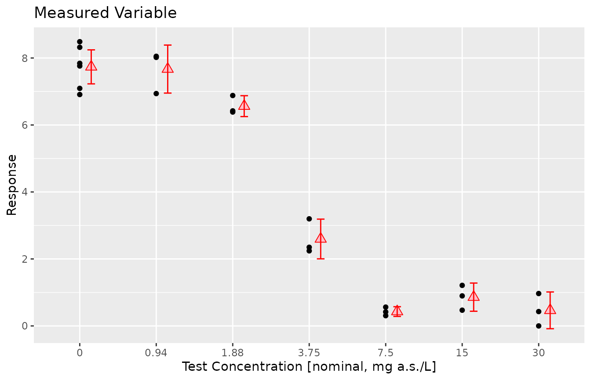

In this vignette, we demonstrate how to use the {drcHelper} package to create tables and graphs for inclusion in a dose-response analysis report. While the functions were developed some time ago and may not represent the most elegant solutions, they are functional. We welcome any suggestions for improvement.
Preliminary Summary
data("dat_medium")
dat_medium <- dat_medium %>% mutate(Treatment=factor(Dose,levels=unique(Dose)))
dat_medium$Response[dat_medium$Response < 0] <- 0
prelimPlot3(dat_medium)
prelimSummary(dat_medium) %>% knitr::kable(.,digits = 3)| Dose | Mean | SD | % Inhibition | CV |
|---|---|---|---|---|
| 0.00 | 7.736 | 0.635 | 0.000 | 8.203 |
| 0.94 | 7.669 | 0.633 | 0.858 | 8.259 |
| 1.88 | 6.563 | 0.275 | 15.161 | 4.197 |
| 3.75 | 2.596 | 0.524 | 66.440 | 20.175 |
| 7.50 | 0.429 | 0.128 | 94.456 | 29.865 |
| 15.00 | 0.859 | 0.372 | 88.892 | 43.296 |
| 30.00 | 0.465 | 0.485 | 93.984 | 104.162 |
Fitting multiple models and rank them.
mod <- drm(Response~Dose,data=dat_medium,fct=LL.3())
fctList <- list(LN.4(),LL.4(),W1.3(),LL2.2())
# plot(mod,type="all")
res <- mselect.plus(mod,fctList = fctList )
modList <- res$modList
res$Comparison
#> logLik IC Lack of fit Res var
#> LN.4 -14.65361 39.30722 6.118094e-01 0.2382532
#> LL.4 -14.94568 39.89136 5.241523e-01 0.2441232
#> LL.3 -19.24379 46.48759 6.848925e-02 0.3326394
#> W1.3 -20.46060 48.92121 3.233853e-02 0.3681387
#> LL2.2 -70.78500 147.57000 5.059273e-17 23.2867452
drcCompare(modRes=res)
#> logLik IC Lack of fit Res var Certainty_Protection
#> LN.4 -14.65361 39.30722 6.118094e-01 0.2382532 High
#> LL.4 -14.94568 39.89136 5.241523e-01 0.2441232 High
#> LL.3 -19.24379 46.48759 6.848925e-02 0.3326394 High
#> W1.3 -20.46060 48.92121 3.233853e-02 0.3681387 Medium
#> LL2.2 -70.78500 147.57000 5.059273e-17 23.2867452 Low
#> Steepness No Effect p-val
#> LN.4 Medium 0
#> LL.4 Medium 0
#> LL.3 Medium 0
#> W1.3 Medium 0
#> LL2.2 Steep 1
library(purrr)
edResTab <- mselect.ED(modList = modList,respLev = c(10,20,50),trend="Decrease",CI="inv")
edResTab
#> .id Estimate Std. Error Lower Upper NW Rating EC
#> 1 LN.4 1.700984 NA 1.473332 1.981769 0.2989078 Good EC 10
#> 2 LN.4 2.067640 NA 1.826100 2.313691 0.2358199 Good EC 20
#> 3 LN.4 3.032169 NA 2.791669 3.273468 0.1588960 Excellent EC 50
#> 4 LL.4 1.684437 NA 1.432457 2.010475 0.3431521 Good EC 10
#> 5 LL.4 2.085759 NA 1.822344 2.363961 0.2596737 Good EC 20
#> 6 LL.4 3.037357 NA 2.775132 3.288824 0.1691246 Excellent EC 50
#> 7 LL.3 1.577783 NA 1.284085 1.961887 0.4295911 Good EC 10
#> 8 LL.3 2.019241 NA 1.705807 2.342361 0.3152440 Good EC 20
#> 9 LL.3 3.078550 NA 2.783875 3.366535 0.1892644 Excellent EC 50
#> 10 W1.3 1.588648 NA 1.208777 2.089897 0.5546347 Fair EC 10
#> 11 W1.3 2.092308 NA 1.688186 2.490045 0.3832417 Good EC 20
#> 12 W1.3 3.171490 NA 2.862468 3.435822 0.1807837 Excellent EC 50
#> 13 LL2.2 NA NA NA NA NA Not defined EC 10
#> 14 LL2.2 NA NA NA NA NA Not defined EC 20
#> 15 LL2.2 NA NA NA NA NA Not defined EC 50Dependencies
library(drcHelper)
library(DependenciesGraphs)
dep <- funDependencies("package:drcHelper","ED.plus")
plot(dep)
dep <- funDependencies("package:drcHelper","mselect.ED")
plot(dep)
#dep <- funDependencies("package:drcHelper","mselect.plus")
#plot(dep)
dep <- envirDependencies('package:drcHelper')
plot(dep)